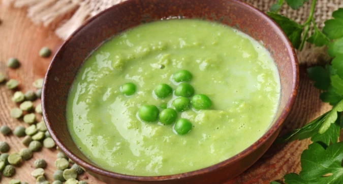

Hrášková polievka


Postup:
-

Cibuľu rozkrájame na malé kúsky a opražíme na oleji v hrnci aby zmäkla a dozlata.
-
Sáčok so zamrznutým hráškom vysypeme k cibuli a miešame dokým sa nerozmrazí a to približne 15 minút. Zatiaľ dáme zovrieť vodu.
-
Pridáme zovretú vodu tak, aby obsah hrnca nebol ani hustý ani riedky. Pokiaľ chceme robiť polievku, dávame viac vody a ak zasa omáčku, menej vody postačí. Vodu vieme aj neskôr doliať a pre to to s ňou netreba preháňať.
-
Vyberieme ručný mixér a obsah hrnca rozmixujeme. Pokiaľ sa nám zdá, že máme málo vody, pridáme jej viac a pomiešame.
Tipy a triky:
-
Ak máme v hrnci hrášok a nevieme koľko vody pridať, pridáme vodu do troch štvrtín obsahu hrnca.
-
Hrášková polieka je veľmi dobrá, pokiaľ je trocha hrášku stále v celku.
-
Pre ostrejšiu chuť, vieme pridať aj nakrájaný cesnak.